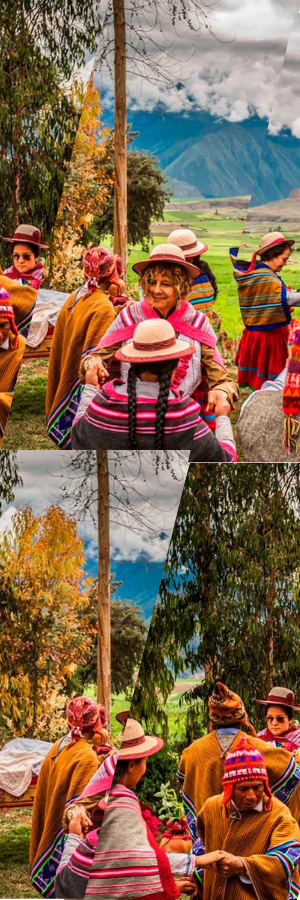

OLLANTAYTAMBO
HistoriaEn esta sección, te invitamos a explorar las raíces de uno de los sitios más emblemáticos del Valle Sagrado de los Incas. Aquí encontrarás: La Historia: Desde su origen como un importante centro militar, religioso y agrícola del Imperio Inca hasta su papel en la resistencia incaica durante la llegada de los españoles. Fechas Festivas Importantes: Conoce las celebraciones tradicionales que aún mantienen viva la cultura y las costumbres de Ollantaytambo, como la Fiesta del Señor de Choquekillca. Leyendas Comunes: Descubre las historias y mitos que rodean este mágico lugar, desde relatos sobre el amor prohibido de Ollantay y Cusi Coyllur hasta otras narraciones llenas de misterio y conexión espiritual. |

|
|---|
Tour y ActividadesEn esta sección, te ofrecemos una guía completa para aprovechar al máximo tu visita a este increíble destino. Aquí encontrarás: Zonas Turísticas: Descubre los principales atractivos de Ollantaytambo, desde su imponente complejo arqueológico hasta sus pintorescas calles adoquinadas. Tours y Actividades: Te presentamos los mejores tours disponibles y las actividades que puedes realizar en cada parada, como caminatas, paseos en bicicleta y visitas guiadas que te conectarán con la cultura y la historia local. Recomendaciones: Una selección de restaurantes donde podrás disfrutar de la deliciosa gastronomía peruana y hoteles que harán de tu estancia una experiencia inolvidable. |
 |
|---|
Consejos PracticosEn esta sección, te ayudamos a planificar tu viaje de manera inteligente y preparada. Aquí encontrarás: Guía por Temporadas: Información sobre qué esperar en cada época del año, ya sea la temporada seca o la lluviosa. Accesorios y Ropa Recomendados: Consejos sobre qué llevar contigo, desde ropa cómoda y resistente hasta accesorios esenciales para tu comodidad y seguridad. Clima Esperado: Un resumen del clima típico de la región para que sepas cómo prepararte según la temporada. Advertencias y Precauciones:: Consejos útiles sobre cómo cuidar tu salud, protegerte del sol, y estar listo para los desafíos que puedas encontrar durante tu visita. |
|---|